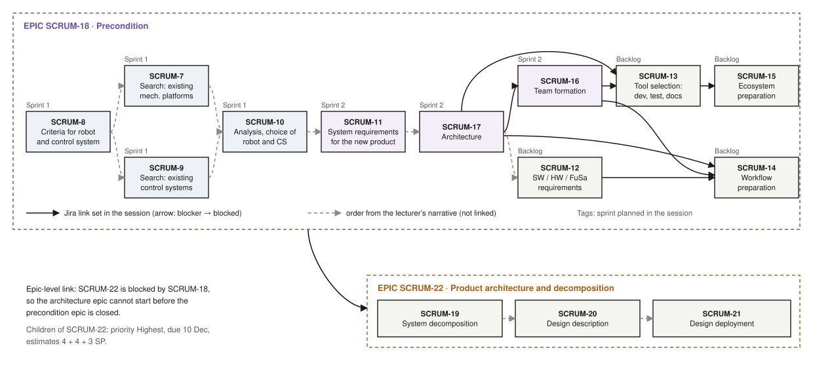
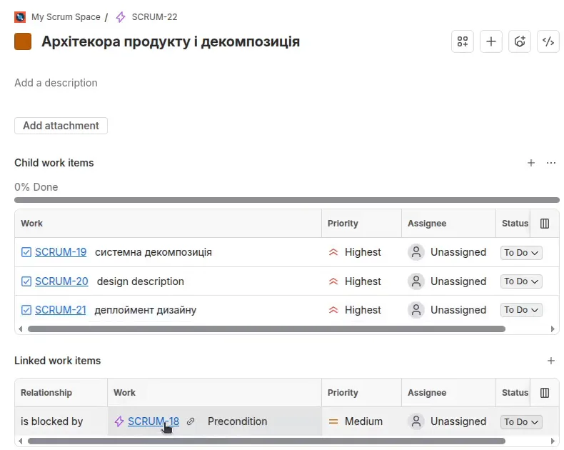
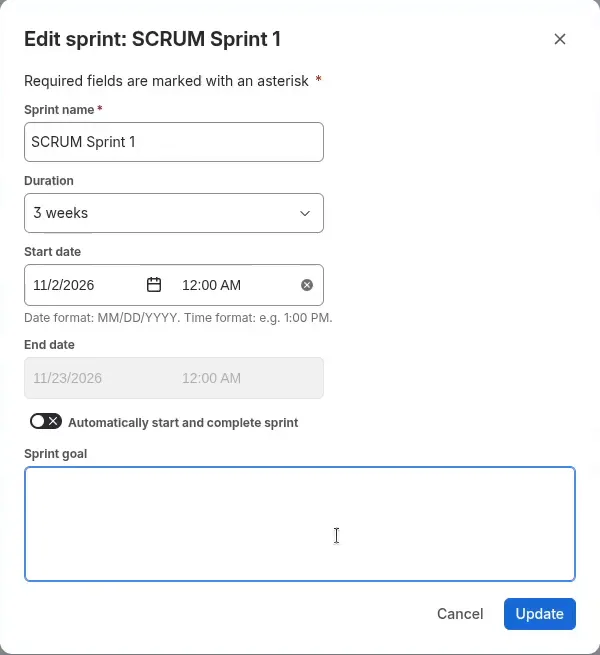
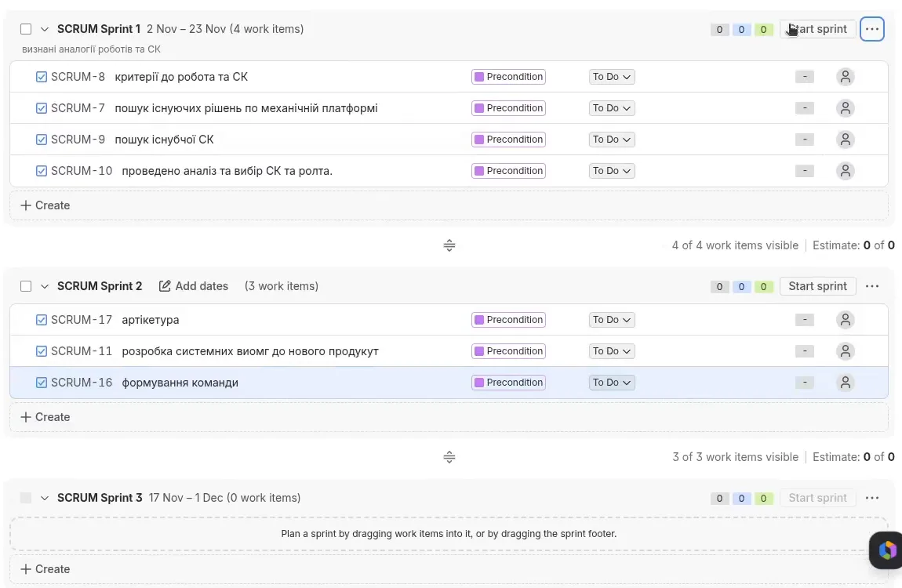

Teaching / Session 17 · 17 Nov 2026
Starting a Project in Jira: Precondition, Dependencies and Sprint Goals
PMBOK and the price of SAFe, a precondition backlog for a robot manipulator, blocking links and epics, a longer first sprint with a sprint goal, holidays and 80 % capacity — plus the second-assessment assignment.
17.11.2026Session 17 / 1700:59:42Practical session
Course chronology
Engineering notes
PMBOK and the price of SAFe, a precondition backlog for a robot manipulator, blocking links and epics, a longer first sprint with a sprint goal, holidays and 80 % capacity — plus the second-assessment assignment.
Dependencies and epics
Sprint goal and calendar
Second assessment
Full session notes
Full session notes
Complete English teaching notes derived from the Ukrainian transcript and video of 17 November. Diagrams are editorial, based on the lecturer’s explanations; student names are not published.
Session 17. Starting a project in Jira: precondition, dependencies, epics, sprint goal and capacity
17 November 2026 · practical session · 1 h. Prepared from the automatic transcript and the video recording
IgorSikorskyKPI_L12_17112006.mp4: ticket names, links between tickets, and the sprint and epic settings the lecturer showed on screen have been added from the video. These are edited teaching notes, not a verbatim record: obvious recognition errors are corrected and terms are aligned with earlier sessions. Student names are not published; the lecturer’s calendar, shown as an example, is not reproduced. Experience at companies is the lecturer’s own practice. Editorial clarifications and editorial diagrams are marked separately. The second-assessment assignment is in section 8.
0. Organisational
- At the start of the session there was an air-raid alert in Kyiv (yellow level). The lecturer asked everyone to confirm they were safe, reminded them the session was being recorded and that, if there is a real risk, it is better to watch the recording later: “A good engineer is a living engineer.”
- The session continues sessions 15 and 16: there the path of a task from start to completion (the workflow) was described, ticket types were reviewed, a Scrum board was chosen for the course, two sprints were created and the criteria for distributing tasks were agreed.
- At the end the lecturer announced the second-assessment assignment (section 8) and the topic of the next session (section 9).
1. Where best practices come from: PMBOK and SAFe
Project models differ from company to company and from project to project, but there are recognised best practices.
PMBOK (Project Management Body of Knowledge) is a collection of best practices for the different kinds of management within projects. Older editions can be bought or downloaded free of charge. In Ukraine there is a community that runs training and certification; a certificate is a good signal that a candidate is worth considering as a potential project manager. On screen the lecturer showed the page of the Ukrainian translation of the PMBOK Guide (seventh edition) on the PMI Ukraine website.
SAFe (Scaled Agile Framework) scales Agile for the case where there are many teams with shared dependencies, which must work in isolation from each other, yet in such a way that the product is eventually released. According to the lecturer, SAFe is used, among others, by large car makers developing a new vehicle: if there are many teams like yours and each builds its own piece of the product, top management will most likely choose SAFe as the release instrument.
If the product is small and one to four teams build it, nobody will invest in SAFe: they will choose Agile (Scrum), Waterfall, Kanban or another simple model from PMBOK.
| Approach | When it fits | Price |
|---|---|---|
| SAFe | Many teams, shared dependencies, a large product (for example, a car) | Many routines: communication between engineers, planning, risk analysis, backlog refinement, demos, plannings, meetings, voting |
| Scrum / Agile | One product, one or a few teams | Noticeably fewer routines than SAFe |
| Waterfall, Kanban | Well-understood tasks, small scale | The fewest routines |
What that price buys. You pay with every engineer investing part of their time in cooperation. In return SAFe solves integration, testing, quality control, certification and the replacement of an engineer who sooner or later wants to leave — at system level. For the project these are not “shocking news” but ordinary routine. More general approaches find such situations much harder to digest.
When SAFe is not needed. One multidisciplinary team (hardware, mechanics, firmware, desktop, designers) builds the product, and it fits into one or two increments — roughly up to half a year, at most a year. Then investing the team’s time in SAFe routines most likely makes no sense. The decision has to be made deliberately.
An exception from the lecturer’s practice. He took the training and held the certificates, including SAFe. At companies where he worked, teams were prepared on internal pet projects and deliberately used SAFe “in excess”. When a large customer working with SAFe arrived, integrating with its teams and working together was easy.
Editorial clarification. The current edition is the PMBOK® Guide — Eighth Edition (PMI, November 2025). A Ukrainian translation of the seventh edition (2021) is freely available on the PMI Ukraine Chapter website. The most common certification based on PMBOK is the PMP (Project Management Professional). In SAFe an increment (PI, in SAFe 6 Planning Interval) usually lasts 8–12 weeks, so “up to half a year” is roughly two or three PIs. The statement about specific car makers reflects the lecturer’s experience; the editors have not checked public confirmation.
2. Precondition: what to do before the project starts
Before cutting the work into sprints, everything the project must do goes into the backlog. The example is the familiar robot manipulator. The lecturer created the tickets one by one and then refined the order; below is the final order (ticket keys as on screen, CS = control system):
| Key | Task | Lecturer’s explanation |
|---|---|---|
| SCRUM-7 | Search for existing solutions for the mechanical platform | Understand which robots are on the market |
| SCRUM-8 | Criteria for the robot and the CS | A search without criteria makes no sense; higher priority than searching for the robot itself |
| SCRUM-9 | Search for an existing CS | The criteria are already there — just search |
| SCRUM-10 | Analysis and selection of the CS and the robot | A comparison sheet in Excel: what to choose |
| SCRUM-11 | System requirements for the new product | High-level requirements for the robot CS, sensor system, actuators, communication, HMI and the cloud part |
| SCRUM-17 | Architecture | Right after the system requirements — before software requirements, workflow and tools; it defines the roles needed |
| SCRUM-16 | Team formation | Roles produce lists of people; then hiring |
| SCRUM-12 | Software, hardware and functional-safety (FuSa) requirements | Decomposition of the system requirements |
| SCRUM-13 | Selection of development, test and documentation tools | Which tools we will use |
| SCRUM-14 | Workflow preparation | How tasks are distributed between engineers, how they are taken into work, who reviews, where time is tracked, where results are pushed — documentation of the working processes so that the whole team works the same way |
| SCRUM-15 | Ecosystem preparation | Set up GitHub or GitLab, integrate it with Jira, prepare Confluence, install the tools on a server or locally for each developer, grant access, ensure compliance with cybersecurity and functional-safety requirements |
The resulting chain: market analogues → criteria → requirements → requirements decomposition → architecture → team → tools → development and test approach → ecosystem. You cannot prepare the ecosystem until you have hired the people.
Team formation is also a ticket in the same Jira. That is normal practice: a project has no “boss” role; there is a manager, an architect, a lead, a technician, an assembler, a developer, a tester. But everyone should understand what was done, why it was done this way, in what sequence, which dependencies there are and why a particular person was taken.
This whole set of tasks is nothing other than creating the preconditions: what has to be done before real project work begins.

3. Dependencies between tickets
How do you tell Jira that one task cannot start until another is closed? The Parent field and subtasks exist, but the lecturer found no separate “dependency” field in this space. The solution: in the ticket, click “+” → Link work item and choose the link type is blocked by.

The links the lecturer set in the session:
| Ticket | Is blocked by | Logic |
|---|---|---|
| SCRUM-16 Team formation | SCRUM-17 Architecture | The architecture defines the roles |
| SCRUM-13 Tool selection | SCRUM-16, SCRUM-17 | Without architecture and team, tools cannot be chosen |
| SCRUM-14 Workflow preparation | SCRUM-16, SCRUM-17, SCRUM-12 | The workflow depends on people, architecture and requirements |
| SCRUM-15 Ecosystem preparation | SCRUM-13 | One link is enough — see below |
Inherited dependencies. As the plan grows, dependencies accumulate. You do not have to list every blocking task on every ticket: a chain is enough. The architecture blocks the requirements, the requirements block tool selection, and tool selection blocks the workflow and the ecosystem. That is why the ecosystem (SCRUM-15) was linked only to tool selection (SCRUM-13).
The lecturer wanted to show how Jira builds a roadmap in time from this, but the service offered a paid subscription.


Editorial clarification. Blocks / is blocked by is a standard Jira link type. The built-in space timeline shows dependencies only for links of the Blocks type and only within one space; cross-project planning (Plans) is available on the Premium and Enterprise plans. Note that in the standard configuration a link by itself does not prevent a blocked task from being moved into progress — it is a team agreement; a technical restriction requires workflow conditions or automation rules. Jira also does not “unfold” a dependency chain automatically: a person reads it, which is why links should point to the nearest blocker, as the lecturer showed.
4. Epics: Precondition and product architecture
Turning a task into an epic. The lecturer created a task “Precondition” (SCRUM-18) and changed its type to Epic instead of deleting it and creating a new one. The logic: if you have already spent two days setting up a ticket, it is easier to convert it. Then he selected all the precondition tasks, chose Edit fields (bulk edit) and set Parent = Precondition → Confirm. Now they share a property: they are part of the Precondition epic.
The first tasks after the preparation. Once the architecture is described, the first thing is to break it into parts:
| Key | Task | What it means |
|---|---|---|
| SCRUM-19 | System decomposition | Turn the high-level diagram into concrete parts that individual engineers will implement |
| SCRUM-20 | Design description | What happens inside each part: the algorithm, the requirements, above all the interfaces, and how everything will be assembled at the end |
| SCRUM-21 | Design deployment | Distribute the design into placeholders so engineers can work in parallel, each in their own “sandbox” |
A second epic was created for them — “Product architecture and decomposition” (SCRUM-22) — and set as their parent by bulk edit in the same way. The tasks got a due date of 10 December (“it is burning”) and the top priority (Highest).
A dependency at epic level. In epic SCRUM-22 itself the lecturer set: is blocked by SCRUM-18 Precondition. Imagine two parents — Precondition and Architecture. The process must make team leads take Precondition first and only then the architecture. The architecture epic, which has a deadline, cannot be closed until the precondition epic is closed.


Estimates and assignment. How to estimate tasks was covered in session 16 (story-point voting); here the lecturer only reminded how they are entered: 4, 4 and 3 SP for the architecture epic tasks, and assigned them to people in the team.

The model is now built, but it is still in the backlog. Next, on the Scrum board some tasks are taken into the first sprint, some into the second, and so on.
5. Sprints: length and goal
Sprints can be edited (the “…” menu → Edit sprint).
Length. The standard is two weeks; the end date is calculated automatically from the start date. But the length does not have to be the same even within one project. The lecturer made the first sprint three weeks long (2–23 November on screen), the rest two weeks each. This is an artificial management decision: the first week will be badly delayed by dependencies nobody can foresee — even with very good engineers “the surprises will start”, and without a margin the sprint will fail.


The sprint goal is a thing to be achieved within the sprint, described concisely in one phrase. It must be achievable and observable: you must be able to say clearly whether it was achieved or not. The goal of the first sprint: “Analogues of robots and control systems identified” — the sprint contains exactly the criteria, the search for existing solutions and the analysis.


A sprint is a “staged”, artificial thing, but everyone plays the game. And the greatest sorrow in this game is missing the sprint goal: it means the team went wrong somewhere and needs to review what to do next so as not to repeat the same mistakes.
Editorial clarification. According to the Scrum Guide (2020), sprints are of fixed length, one month or less — this gives a rhythm and comparable data on the team’s velocity. A longer first sprint is a deliberate practical compromise by the lecturer; if you use it, remember that the velocity of the first sprint cannot be compared directly with later ones. In the Scrum Guide the Sprint Goal is the single objective for the sprint, crafted by the team during Sprint Planning; it gives flexibility regarding the exact work needed.
6. How the plan and the sprint goals are formed
The lecturer described how it looks in practice:
- Slicing. The whole team gets together and slices the work into tasks in the backlog — one, two, three, four hundred tasks.
- “Combing”. The most experienced people, “the ones it really hurts”, set dates (the team votes on the estimates), parents, dependencies and a description for every task.
- Priorities. Leads, the architect and the product owner — the person who defines the criteria of the product at its output and knows what they want at the end — set the priorities: highest, high, medium, low, lowest.
- Untangling. Priority is not everything: you must look at the dependencies. The architecture has the highest priority, but it cannot be taken into the first sprint — there are no criteria and requirements yet, “the systems approach is still very raw”. So we take the tasks it depends on and do them as fast as possible; that unblocks the high-priority task, which in turn unblocks a whole bush of others. The lecturer’s metaphor: combing hair — find the most tangled spot, untangle it, move to the next, “until every burr is out of the hair”.
- Filling the sprints. By this criterion the tasks fall into sprints. The aim is that nothing is left in the backlog at planning time. The number of sprints needed is the project duration: you see the end date.
- Buffer and calendar. Then a buffer is added and the calendar is opened: who works when, which holidays. Example: a Swedish customer has its own holidays (Midsummer and others), plus global ones: New Year, Christmas. A sprint may last two weeks, but of its 10 working days only 4 will be real — the sprint capacity is 4 days, not 10, because holidays fall on this sprint for the whole team.
- A goal for each sprint, and the start.

Invest time in planning. The more carefully you go through it, the fewer problems. Otherwise you get a beautiful Jira that does not work because you “missed” that nobody will be working at that time.
SAFe stresses explicitly: once every three months everyone gathers in one place and looks at what was done, what was not, what to move, what to drop from scope entirely, what to add to the backlog and how to prioritise; they hold a retrospective — what went wrong, what to change, stop or start. The aim is for the product to keep being released on time, with quality and without excessive stress.
If the planning takes into account the real sprint capacity, the real goal, the real dependencies and the real abilities of the team, then the team, the leads and the customer can work comfortably. And if people are comfortable, they can work for as long as needed and keep growing the product’s value for just as long. Everyone is happy — that is good business. The Swedes call this harmony lagom.
Editorial clarification. In SAFe this is the PI Planning event: usually two days, held at the start of every increment, i.e. every 8–12 weeks — “once a quarter” corresponds to the upper bound. Midsummer in Sweden is celebrated at the end of June (Midsummer Eve is the Friday between 19 and 25 June). Lagom is Swedish for “just the right amount”, neither too much nor too little.
7. 80 % capacity: how to explain it to the customer
A reminder from session 16: a sprint is filled to about 80 % of capacity. Here a conflict arises. The customer pays money — and engineers are not paid small amounts. Architects, the PO and the PM say: “We calculated a sprint of 10 story points, we plan only 8.” The customer is outraged: “I am paying you for 10!”
The lecturer’s arguments:
- Routines — communication between customer and supplier, sprint planning, sprint demo, retrospectives, backlog refinement, calls. You cannot get rid of them “as long as humans exist”, but they take time — a lot of it. The lecturer showed his working calendar for the previous week: most of the time was calls and process alignment, with only small windows for offline work. His role is specific and engineers have less of this, but it still takes time.
- Context switching. Ivan is coding, thinking about his task — and then a call: “Tell me how you implemented that interface?” He has to step away, communicate and come back — and coming back also takes time.
- The unplanned. A lot is planned, but not everything makes it into the plan.
Hence 80 %. Do not fall for the provocation “let’s do 100 %, we have already paid”: explain literally that this is time for communication, context switching and unplanned work.
Starting the sprint. When everything is planned, you press Start sprint. Jira asks again whether everyone is ready. On great projects it is like a rocket launch: everyone stands together holding their breath; sometimes someone shouts “stop!” at the last moment — something was forgotten. It is added, and again: “Three, two, one, start.” From that moment the countdown runs: there is a body of work that must be done, otherwise you “burn” the sprint goal and let down your team, your lead and yourself.
8. Second assessment: the individual assignment
At the end of the session the lecturer announced that the second assessment is starting and explained what he expects for a successful submission. Answering a student’s question, he confirmed that it is individual work. Asked to repeat the assignment in the group chat, the lecturer replied that he runs the recording through Whisper and gets the assignment as a list — here it is.
What to prepare:
| # | Stage | What to do | Where in the course |
|---|---|---|---|
| 1 | Company | Company name, goal, domain, set-up (composition and structure), location, budget | 01, 07 |
| 2 | Website | Based on this — with any AI tool — a one-page website (one-pager) for the company; publish it on free hosting so that it appears on the web | 07, 08 |
| 3 | Presentation | A presentation about the company in the same design style | 07, 10 |
| 4 | Poster and cards | A poster you are supposedly taking to a conference, and business cards | 07, 08 |
| 5 | Conference | Find a real conference taking place in 2027 and show that you are going: you have agreed with the organisers, paid the fee and so on (simulated) | 03, 09 |
| 6 | Trip | A simulation of preparing for the trip and communicating with the travel department; the trip itself | 09, 10 |
| 7 | Customer meeting | A simulation of a meeting with a customer and a discussion with them | 09, 10, 11 |
| 8 | Follow-up | First follow-up, second follow-up, conversion into a customer, further communication | 04, 10, 11, 12 |
| 9 | Proposal and architecture | Creating the proposal and the architecture description | 05, 06, 08, 12–14 |
| 10 | Tasks | Decomposing the architecture description into tasks in Trello, Jira or GitHub Projects | 15, 16, 17 |
The “Where in the course” column was added by the editors: the numbers of sessions where the topic is covered in more detail.
Submission format:
- A screen recording with voice-over: you step into the roles and literally talk through how everything happens.
- One video from each student covering all the stages listed above.
- Total length no more than 15 minutes. Prepare properly, then demonstrate the artefacts.
- Where to focus your time and effort is your choice. That is, in fact, part of your sales strategy.
Deadline: the assessment sheet closes on 30 November; the lecturer needs time to check, so the work must be submitted by 27 November 2026.
“If you do this, I will be incredibly happy. For me it will mean that all this is not in vain.”

Editorial clarification: relation to session 15. On 10 November the second assessment was described as a team project (architecture description, proposal, Gantt chart, engineer involvement and cost, pricing models, a tracker space with a backlog of at least four sprints), and the path “company → conference → customer → proposal” as a large individual design assignment after the second assessment. On 17 November the lecturer announced exactly this individual list as the second-assessment assignment. These notes record both announcements as they were made; the most recent one is that of 17 November. If anything in the requirements is unclear, check with the lecturer.
Checklist before submitting (from the editors, based on the lecturer’s requirements):
- The website opens via a public link from another device.
- Website, presentation, poster and cards share one style and the same contacts.
- The conference is real and takes place in 2027; the video includes a link to it.
- The video covers all stages 1–10, even if some only briefly.
- The tasks in the tracker come from your architecture description rather than being written separately.
- The total video length is up to 15 minutes; the video is submitted by 27 November.
9. Announcements and the next session
- The lecturer wanted to talk about the process of hiring engineers and other specialists into a project — how it is run and what to look for. The topic moved to the next session (in a week) or to an offline recording.
- Preparation for the lecturer’s business trip has started. As always it comes with nuances: something does not fit, someone missed something, the travel department does “not quite the right thing”. The lecturer is recording short videos of this preparation; after returning he will process them and publish them as a seminar module: preparing for the trip, the trip, the problems, how they were solved and how it all ended.
- Next session: preparing the company’s internal processes for hiring engineers — different kinds of engineers, different kinds of engagement.
Practical takeaways
- PMBOK is a collection of project-management best practices; SAFe is for many teams with shared dependencies, but its price is a share of every engineer’s time spent on routines.
- Before the project starts, the backlog holds the precondition: analogues, criteria, requirements, architecture, team, tools, workflow, ecosystem.
- The architecture comes right after the system requirements and defines the roles; the ecosystem cannot be prepared without people.
- Dependencies in Jira are is blocked by links; a chain to the nearest blocker is enough.
- An existing task can be converted into an epic; the parent of many tasks is changed by bulk edit.
- Dependencies can also be set between epics — this orders large blocks of work.
- The first sprint can be longer; the sprint goal is one achievable, checkable phrase.
- The plan is built from dependencies, not only from priorities; the number of sprints gives the end date.
- Holidays of the team and the customer reduce the real sprint capacity — check the calendar.
- 80 % capacity is time for routines, context switching and the unplanned; you must be able to explain this to the customer.
Self-check questions
- What is PMBOK, and why does a manager need a certificate?
- When is SAFe justified, and when do its routines not pay off?
- What belongs in the precondition of the robot-manipulator project, and why in that order?
- Why is the architecture done before team formation and tool selection?
- How do you set a dependency between tickets in Jira, and what are inherited dependencies?
- Why convert a task into an epic rather than create the epic from scratch?
- How and why do you set a dependency between epics?
- Why can the first sprint be longer than the following ones?
- What should a sprint goal be like? Give an example for the first sprint.
- How do you get the project end date from the backlog?
- How do the customer’s holidays affect sprint capacity?
- Which arguments for 80 % capacity can you give the customer?
- Which stages must the second-assessment video cover, what is its maximum length and what is the deadline?
What comes next
Announced by the lecturer: the next session (about a week later) covers the company’s internal processes for hiring engineers, different kinds of engineers and different kinds of engagement. Editorial forecast, not an announcement: likely topics are role profiles derived from the architecture, vacancies and interviews, engagement models (staff, outstaffing, contractor) and onboarding — in other words, filling the “Team formation” task (SCRUM-16).
Verified links
- PMI, PMBOK® Guide — Eighth Edition: https://www.pmi.org/pmbok-guide
- PMI Ukraine Chapter, PMBOK Guide (seventh edition, Ukrainian translation): https://pmiukraine.org/pmbok7
- SAFe, PI Planning: https://framework.scaledagile.com/pi-planning/
- The Scrum Guide (2020): https://scrumguides.org/scrum-guide.html
- Atlassian, dependencies on the Jira timeline: https://support.atlassian.com/jira-software-cloud/docs/show-or-hide-dependencies-on-your-roadmap/